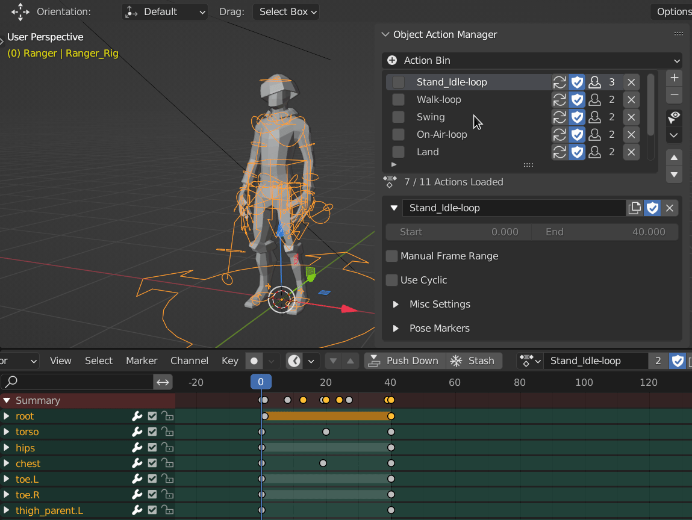
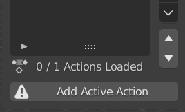
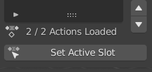
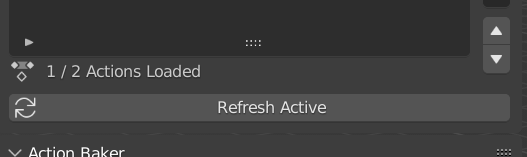
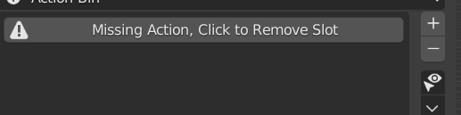
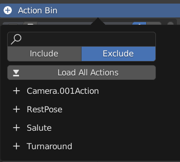
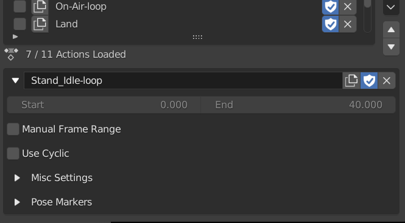
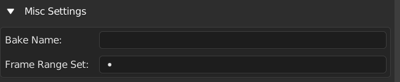
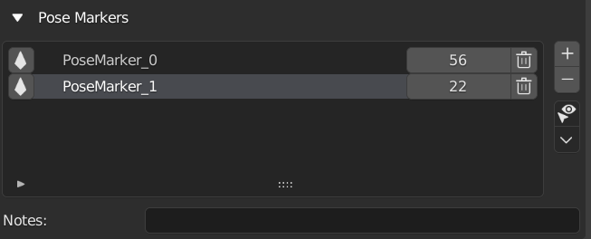
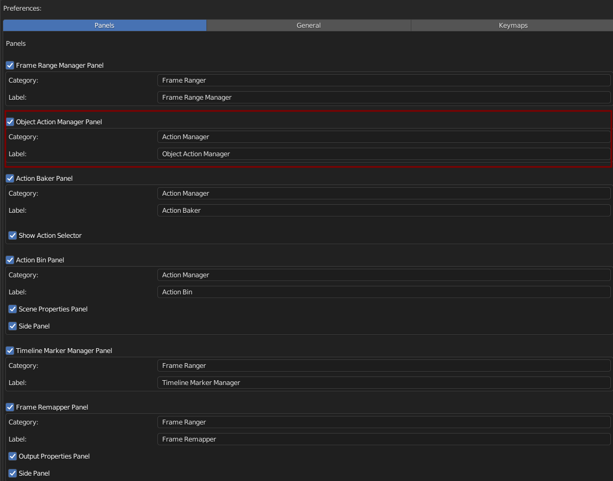

Object Action Manager
Object Action Manager Stores Actions in Object so that you can associate actions to a object, and switch the object’s action easily. It Also Comes With Many Other Feature that can be useful
This is the Currently the Primary Focus of the Addon

Getting Started
First Thing In Object Action Manager, is to Load / Add Action into the List
There are Multiple Ways to Get Action Into the List
You Can Create New Action, Load Existing Action, Append Action From Other Blend File, Or Load Action From FBX file
Behaviour
Setting the Active Item in the List will Update the Object’s Action and Set the Scene Frame Range to the Target Frame Range
Action Mismatch
Sometimes The Actual Object’s Action and Object Action Manager Can Be Mismatch
When Object Action Manager Detects that, It Will Displays the Below
Add Active Action
This Will Show If the Active Action is Not in the Object Action List
If you click this Operator, It will Load the Active Action into the List
This Usually Happens When You Create A New Action By Adding A Keyframe
Just Click the Add Active Action to Fix this
Set Active Action
This Will Show If the Active Action is in the Object Action List but is not the Active One
If you click this Operator, It will Set the active action to the correct one in the List
This Usally Happens When you Manually Change the Action in Action Editor
Just Click the Set Active Action to Fix this
Refresh Active
This Will Show If the Object Have No Action But there is Action in Object Action List
This Usally Happens When you Manually Action From the Object in Action Editor
Just Click the Set Active Action to Fix This
Missing Action
This Will Show If an Action in a List is Removed From the Blend File
Just Click the Remove Missing Action Button to Remove the Missing Action
Action List
A List Of Actions Stores in this Object
- Menu Operators
- Add New Action
- Import And Load FBX Actions
- Choose and Append Blend File Action
- Append All Actions From Multiple Blend Files
- Load Multiple Actions
- Load Single Actions
- Push All Action to NLA
- Batch Rename Actions
- Sort Action Slot
- Clear Action List
- Remove Action By Condition
- Clean List
- Fake User On
- Fake User Off
- Bake Selected Actions
- Duplicate and Replace All Slot
- List Items
Action Loader
Action Loader Allows you to Load Existing Action in the Blend File to the Object
It Will List out All Actions in the Blend File, there is a Search Box For you to Use for Filter the Action that you Want to Load
Include: Check if the string in the search box is in the action name
Exclude: Check if the string in the search box is not in the action name
Load All Action: Load All Action in the Visible in the List
Action List: Click the Action Name to Load that Action into the object
Note
The Action is Loaded to the Object, that means if the Animation is for an Armature, Make Sure the Action is Loaded to the Armature Object and not the Mesh
Action Settings
Display the Settings for the Active Action in the List
Action Name: Action Name
Frame Range: This Action’s Frame Range
Manual Frame Range: Turns on Manual Frame Range to Set your Custom Frame Range
Use Cyclic: Turns on Cyclic for this Action
Misc Settings: These includes less used options

Bake Name: Name to be Used when baking animation using Frame Ranger
Frame Range Set: Associate this Action with a Frame Range Set, automatically Swtich to this Frame Range Set when Active
Pose Markers List: Pose Markers List of this Action
Pose Markers List
Pose Markers List Present Object’s Pose Markers in a List Form, making it easier to manage.
Pose Markers is a very hidden feature, this is rarely used, so Pose Markers List have lesser feature, it exist mainly for consistency
This list is stores in the action
Notes: Just a String Field For you to Write Comments or Notes
Preferences
You Can Enable / Disable, Rename Category, and Rename Label in Preferences

Default Category: Action Manager
Default Label: Object Action Manager